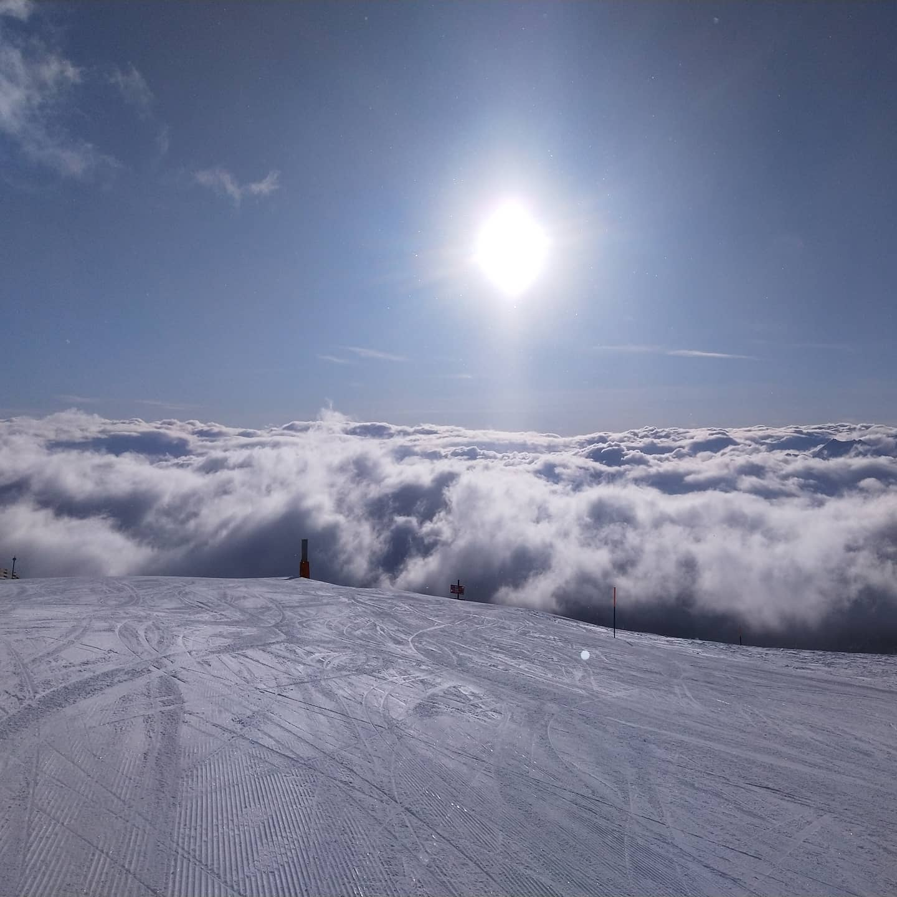

Passion
Georg
ios
e

I solve problems
How I realized it?
Started as an one man show
Continued with a start up
Went to the telecom sector
Ended up in a bank
Curiosity
A driver for passion
Want to see what I build
I like when I make a difference
Impactful

Skiing